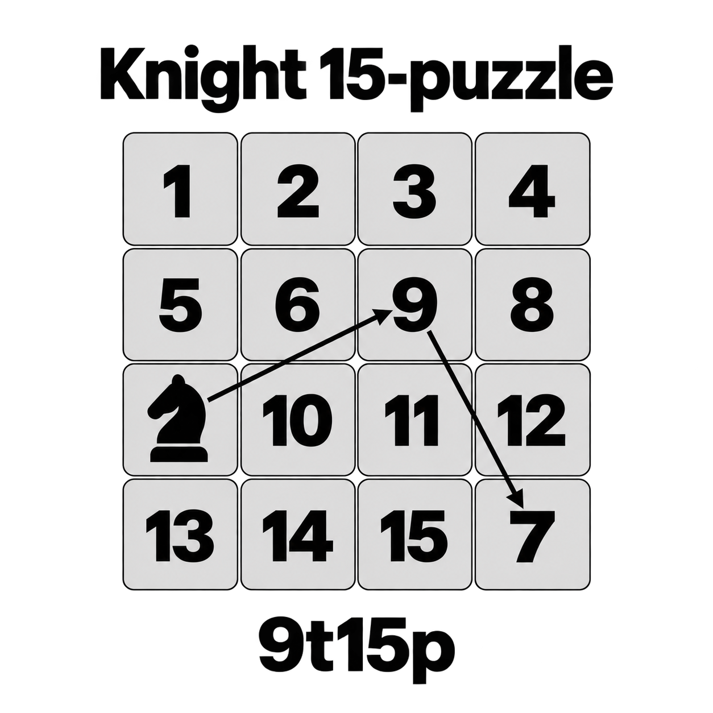

KNIGHT SLIDING PUZZLE
马步数字华容道实验室
沿日字跳跃，借一个空格，让每个数字回到自己的位置。
玩法
● 红环● 蓝环● 绿环● 黄环
颜色代表目标环，标志在单格内的位置代表目标位置。归位格颜色较暗。四环说明适用于4×4棋盘。
从左到右、从上到下升序排列，右下角留空。所有编号都归位才算完成。
操作
「标」恢复标准布局；「手」按编号摆局；「随」生成可解局面。「编辑」模式中，点击任意数字与空格交换，不限制马步；支持撤销和取消。
- 点击「手动摆局」，按顺序选择数字 1、2、3… 的位置。
- 棋盘上右键撤销上一次放置；最后一格自动留空。
- 点击「完成摆局」检查可解性并开始操作。
坐标左上角为 a1，向右字母递增，向下数字递增。
按 W/A/S/D 或方向键，连续两键输入马步：第一键走两格，第二键走一格，方向相互垂直。WA / ↑←＝空格与上二左一的格子交换；AW / ←↑＝左二上一。Esc 取消输入。
鼠标位于棋盘内时，上滚后退、下滚重做。输入框中保留正常键盘输入。马不受中间棋子阻挡；Tab＋Enter 也可操作格子。
棋盘
自由探索
点击带细框的数字即可移动。后退后走新路线，会清除旧的后续记录。